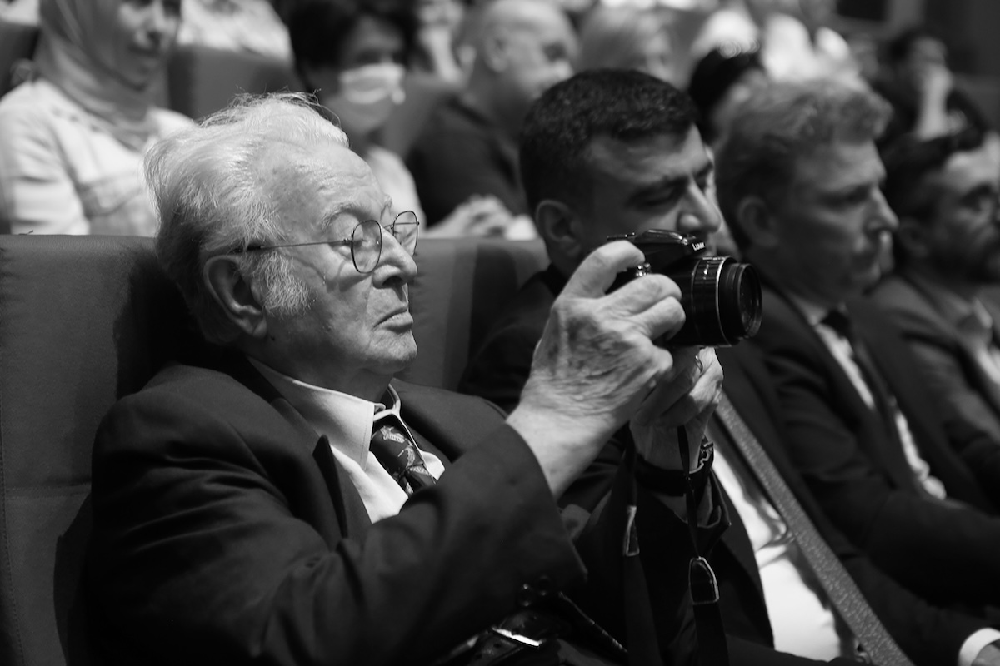

İbrahim Zaman: Türkiye’nin Gözünden Yarım Asır

Türk fotoğraf sanatının önemli isimlerinden biri olan İbrahim Zaman, yarım asrı aşan üretimiyle hem belgesel fotoğrafçılığın hem de kültürel hafızanın güçlü temsilcileri arasında yer alır. Türkiye’nin sosyal dokusunu, insan hikâyelerini ve değişen şehir yaşamını büyük bir titizlikle kayıt altına alan Zaman, fotoğrafı yalnızca estetik bir uğraş değil, aynı zamanda bir tanıklık aracı olarak görmüştür.
Hayatı ve Eğitimi
İbrahim Zaman, 1937 yılında İstanbul’da doğdu. Çocukluk ve gençlik yılları, Türkiye’nin hızlı toplumsal dönüşüm yaşadığı bir döneme denk geldi. Bu değişim atmosferi, ilerideki fotoğraf yaklaşımının temelini oluşturdu.
Üniversite eğitimini İstanbul Üniversitesi Edebiyat Fakültesi’nde tamamladı. Akademik formasyonu doğrudan fotoğraf üzerine olmasa da, edebiyat ve sosyal bilimlerle kurduğu bağ, onun fotoğraf diline derinlik kazandırdı. İnsan hikâyelerine duyduğu ilgi, ilerideki belgesel çalışmalarının merkezinde yer aldı.
Fotoğrafla Tanışması
İbrahim Zaman’ın fotoğraf serüveni genç yaşlarda başladı. Fotoğraf makinesiyle kurduğu ilişki kısa sürede amatör meraktan profesyonel üretime dönüştü. 1960’lı yıllardan itibaren Türkiye’nin farklı bölgelerini dolaşarak sosyal yaşamı belgelemeye başladı.
Bu dönemde fotoğraf anlayışı şu üç temel üzerine oturdu:
- İnsan odaklı anlatım
- Belgesel gerçeklik
- Zamana tanıklık
Zaman’a göre fotoğraf, “anı yakalamak”tan çok, o anın arkasındaki hikâyeyi görünür kılma sanatıdır.
Profesyonel Kariyeri ve Çalışmaları
İbrahim Zaman uzun yıllar foto muhabirliği yaptı. Türkiye’nin önde gelen yayın organlarında görev alarak hem haber fotoğrafçılığı hem de belgesel fotoğraf alanında üretimlerini sürdürdü.
Kariyeri boyunca:
- Anadolu’nun kırsal yaşamını
- İstanbul’un dönüşen yüzünü
- Türkiye’de gündelik hayatı
- Kültürel ve sosyal değişimleri
belgeleyen kapsamlı arşivler oluşturdu.
Onun fotoğraflarında dramatik kurgu yerine sade, doğrudan ve samimi bir anlatım öne çıkar. Bu yönüyle çalışmaları, izleyiciye güçlü bir gerçeklik duygusu verir.
Fotoğraf Anlayışı ve Üslubu
İbrahim Zaman’ın fotoğraf dilini belirleyen en önemli unsur, insana duyduğu saygıdır. Kadrajlarında yer alan kişiler çoğu zaman gündelik hayatın içinden sıradan insanlardır; ancak Zaman’ın bakışı, bu sıradanlığı anlamlı ve evrensel bir anlatıya dönüştürür.
Üslubunun belirgin özellikleri:
- Doğal ışık kullanımı
- Müdahalesiz belgesel yaklaşım
- Siyah-beyaz fotoğrafa verdiği önem
- Güçlü kompozisyon disiplini
- Hikâye anlatımına odaklı kareler
Özellikle siyah-beyaz fotoğraflarında ton geçişleri ve kompozisyon dengesi dikkat çeker.
Yayınları ve Kitapları
İbrahim Zaman yalnızca fotoğraf üreten değil, aynı zamanda fotoğraf üzerine düşünen ve yazan bir isimdir. Fotoğraf kuramı, belgesel fotoğraf ve görsel kültür üzerine yazıları çeşitli dergilerde yayımlanmıştır.
Hazırladığı fotoğraf albümleri ve kitaplar, Türkiye’nin yakın tarihine görsel bir arşiv niteliği taşır. Bu çalışmalar, hem akademik çevrelerde hem de fotoğraf meraklıları arasında referans kaynak olarak kabul edilir.
Eğitmenlik ve Fotoğraf Dünyasına Katkıları
Zaman, meslek hayatının ilerleyen dönemlerinde eğitim faaliyetlerine ağırlık verdi. Atölyeler, seminerler ve üniversite dersleri aracılığıyla birçok genç fotoğrafçının yetişmesine katkıda bulundu.
Öğrencilerine en sık vurguladığı yaklaşım şuydu: “İyi fotoğraf makineyle değil, bakışla çekilir.”
Bu yaklaşım, onun fotoğraf felsefesini özetleyen en önemli cümlelerden biridir.
Sergileri ve Uluslararası Tanınırlığı
İbrahim Zaman’ın fotoğrafları Türkiye’de ve yurt dışında çok sayıda sergide yer aldı. Çalışmaları, Türkiye’nin görsel belleğini temsil eden önemli arşivler arasında kabul edilir.
Sergilerinde öne çıkan temalar:
- Göç ve kentleşme
- Anadolu insanı
- İstanbul yaşamı
- Zaman ve mekân ilişkisi
Uluslararası platformlarda da tanınan Zaman, Türk belgesel fotoğraf geleneğinin önemli temsilcilerinden biri olarak gösterilir.
Türk Fotoğraf Sanatındaki Yeri
İbrahim Zaman, Türkiye’de belgesel fotoğrafın kurumsallaşma sürecine tanıklık etmiş ve bu sürece aktif katkı sunmuş kuşak içinde yer alır. Onun çalışmaları:
- Sosyal belgesel geleneğini güçlendirmiş
- Foto muhabirliği ile sanat fotoğrafı arasında köprü kurmuş
- Türkiye’nin görsel hafızasına kalıcı kayıtlar bırakmıştır
Bugün birçok fotoğraf araştırmacısı tarafından, Türkiye’nin yakın dönemini anlamak için başvurulan görsel kaynaklar arasında Zaman’ın arşivi özel bir yere sahiptir.
Sonuç
İbrahim Zaman, fotoğrafı estetik bir üretimin ötesinde, toplumsal hafızayı koruyan güçlü bir anlatım dili olarak kullanan ustalardan biridir. Yarım asrı aşan üretimi boyunca Türkiye’nin insanını, sokaklarını ve değişen yüzünü sabırla belgeleyen Zaman, Türk fotoğraf tarihinin sessiz ama derin iz bırakan tanıkları arasında yer almaktadır.
Onun mirası, yalnızca çektiği karelerde değil; yetiştirdiği öğrencilerde, yazdığı metinlerde ve fotoğrafa kazandırdığı etik bakışta yaşamaya devam etmektedir.